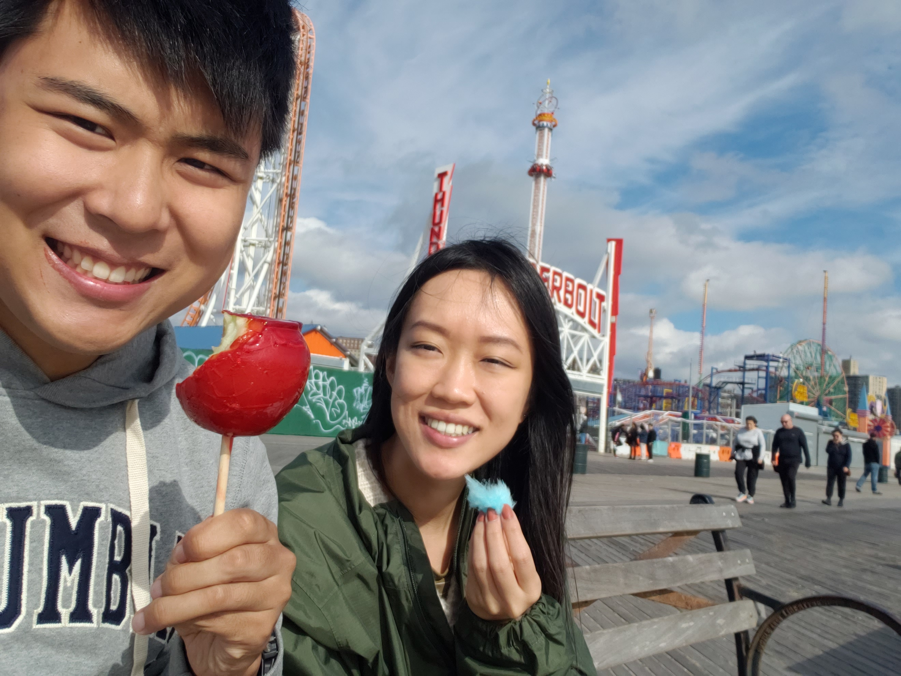
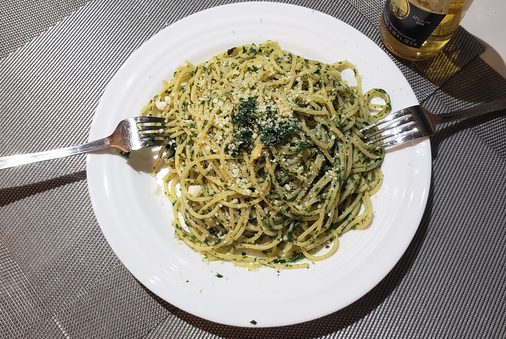
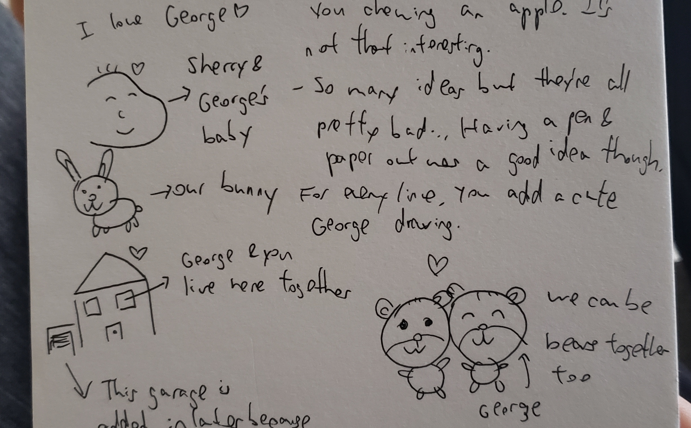
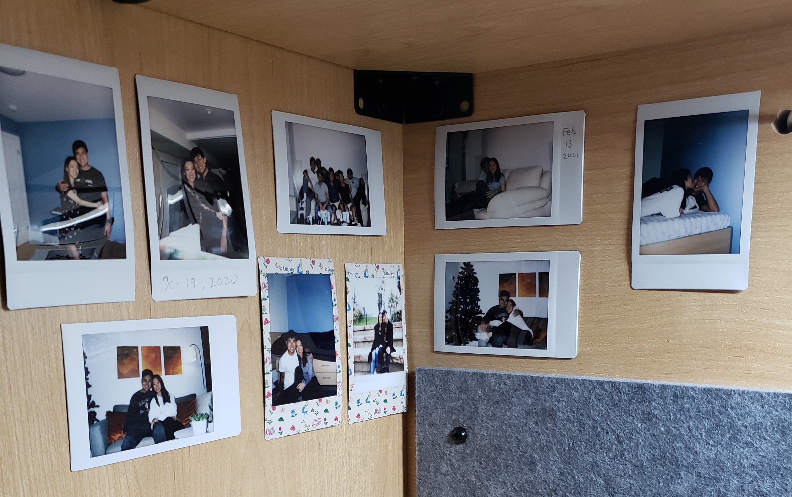
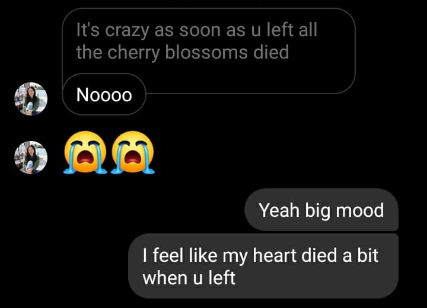
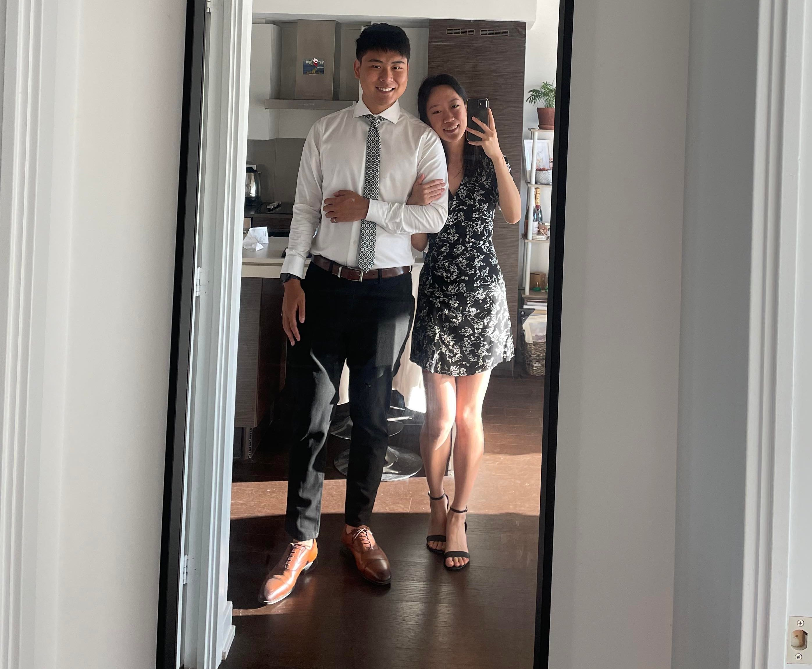
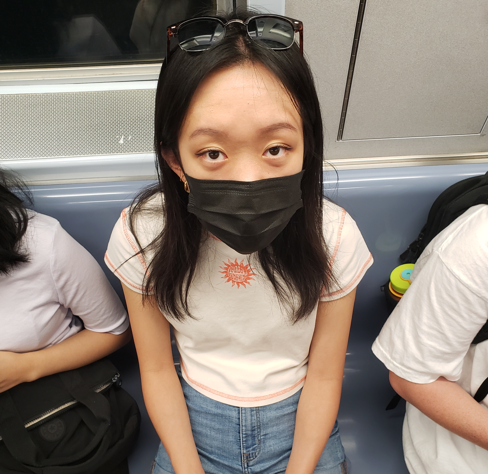
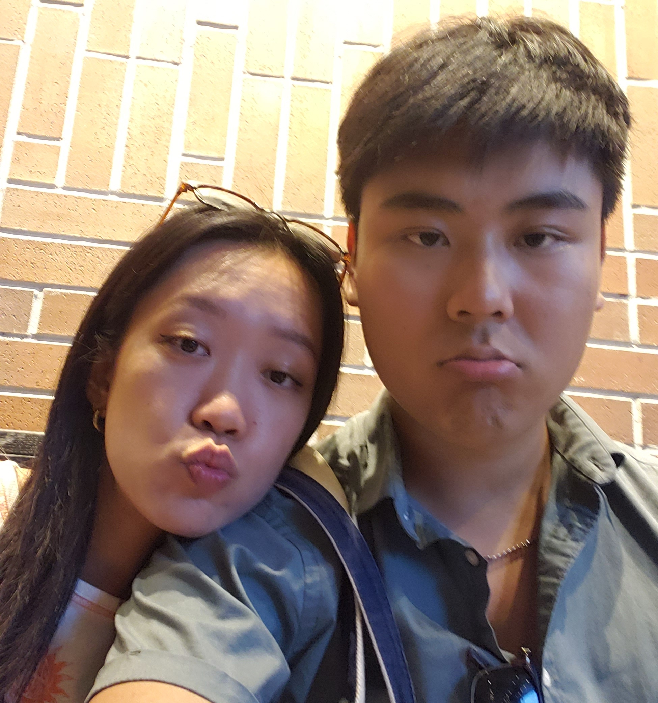

October 2021: Being main characters in NYC
1 / 4
October 12: A mysterious Instagram account is created
2 / 4

October 23: Strangers take picture of stylish couple
3 / 4

October 31: Fun times at Coney Island
4 / 4
October 28: The most inner peace one could attain
New York, NY
Two months after their tragic separation, Sherry visited George in New York City. Their well documented reunion tore through the internet, as stories documenting meals and locales began popping up on popular influencer accounts. This visit was aligned with their first anniversary, which is well on its way to being a lifelong celebration (at least until their projected marriage).
{kind=link}
When asked about it, Mr. Lu said:
“It was so good being able to see Sherry in person again, just the best feeling ever!”
October was filled with lots of good food, lots of cuddles, and lots of love. There was a lot of reminiscing about the year prior, and lots of hope for the future. A lot of sights were seen, but not enough pictures were taken nor dances danced. Luckily, this joyous trip continued into November!
November 2021: The reunion ends abruptly
New York, NY & Toronto, ON
The much-anticipated reunion of Sherry and George continued throughout the start of November, with trips to the MoMa and Flushing, in addition to their first omakase experience! A lot time was spent with the newest member to their clan, Bunny. Unfortunately, Sherry had to return to Toronto, and the rest of November was back to long distance. November was a tough month for Sherry, as she had to deal with a lot of condo-related activities. However, she still took time for many kisses!
An imaginary bystander near Ms. Wang heard her say:
“Man I sure miss George, [something inaudible] cheeks.”
Ultimately, the stress of dealing with parents and banks and agents and lawyers paid off for Sherry, as she entered December as a homeowner! George, while probably moping about something else, was super proud of that achievement, and probably could have been more vocal about his excitement.
December 2021: A month of big moves
Toronto, ON
During this holiday season, the Wang household consisting of Sherry, Dino, and a young Bunny moved to Sherry’s new condo and got settled in. The matriarch Sherry spent countless hours decorating and setting things up. In the meantime, George came by to help install mirrors and lights, and only took three tries and many shot fuses to get the lights to finally work, though they remain slightly slanted. George and Sherry finally got a taste of living together, and it was fantastic.
“Uh oh, COVID is a thing again”
That was a thought that rang throughout Toronto in December 2021, and the aftermath of the Wang Housewarming Gathering resulted in a 67% infection rate plus an extremely dehydrated and hung-over George. Regardless, this holiday season was an opportunity for many nights of cuddles, TV watching, and late-night Wendy’s trips.
January 2022: A roller coaster of emotions
1 / 4

January 7: Sherry establishes her Italian expertise with pasta
2 / 4

January 9: Some observations written down after some tea
3 / 4

January 15: George prepares to stare at this corner for hours
4 / 4

January 24: A shocking but pleasant turn of events
New York, NY & Toronto, ON
The new year started off with some very intense moments. There was a lot of crying during a special trip, and a lot of dread regarding the future. George was devastated to leave Sherry, as the two of them were just getting used to a life of cohabitation (and no codependence, hah). They had gotten used to cooking together and learning how to clean better (on George’s end). After George left for New York, things were looking down: George had to grapple with living a miserable PhD life alone again, while Sherry had a new tough project at work and also had to adapt to living alone.
As George so eloquently put it:
“Gosh I don’t know when I’ll see Sherry again, and that makes me sad”
Little did the two of them know that what was presumed to be months apart ended up being just over a week or two. Sherry’s project meant a lot of NYC travel! And thus, the hotel era of the relationship sprang forth. While tough, it was amazing that the couple got to see each other so often. Funnily enough, this was the most frequent days together that the two busybodies ever had thus far.
February 2022: The solidification of date night
The key to a good February: dates!
An op. ed. by George Lu, PhD (maybe)
New York, NY & Online
Ah February, the month of love. Along with perhaps anniversaries and birthdays, Valentine’s Day can be an intimidating holiday to prepare for. Additionally, in North America, February is probably the least romantic month, which adds to this intimidating nature of the month. There’s no holiday cheer left, the optimism from the new year has dwindled, and it is one of the coldest months of the year. This diminutive month brings a lot of woes, and as a result, Valentine’s Day is ironically the holiday where the most breakups happen (per some spurious internet sources). I’ve personally had many a rough February.
So how are Sherry and George (not to be confused with author) managing it? It’s a hectic time for the two, and they’re constantly on and off with LDR. Even with these obstacles, they’re somehow still the greatest couple in the world. My hypothesis is due to their date nights, which I’ve studied quite thoroughly. In February of 2022, Sherry and George went on at least 1 date a week, even though they were virtual. In fact, they were even a part on Valentine’s Day itself! I have acquired some exclusive photos documenting some of these dates, shown above.
A common theme of these dates is that they require some planning, whether it’s picking restaurants or making reservations/plans, at least some thought went into it. Furthermore, these dates provide ample time to converse and further bonds. Even with their hectic schedules, the fact that Sherry and George took this time consistently to share with each other speaks volumes. They even made compromises with LDR, and held virtual date nights. It’s really inspiring that they continue to go on dates, and I hope date nights will be a lifelong tradition for them!
George Lu is a PhD researcher at Columbia University who likes thinking about relationships (just one, really) in his spare time.
March 2022: An escape from NYC
A special report on Hudson, New York
By George Lu, BASc
Hudson, NY
Looking for the ideal town for antiquing? For good food? For quaint sights? For a high cured meat and cheese to population ratio? Look no further than Hudson, NY. Taking the renowned Amtrack from NYC’s famous Pennsylvania Station, George and Sherry find themselves on a scenic journey up the Hudson River. Highlights along the way include the renowned Lamont-Doherty Earth Observatory along the Palisades, and the legendary military academy at West Point.
Arriving in Hudson, why not try staying at the Wick Hotel? A large candlestick factory converted into a luxury living space. George and Sherry walked up the main street many times those days, peered into many stores, and Sherry commented about it being like a simulation many times. I suspect that Sherry thinks that any suburban space that is empty feels like a simulation (see my earlier 2021 release on Wolf Island). Hudson provided George and Sherry a much-needed repose from the hustling city life, and the quiet, antique-y town lived up to those expectations. A must-visit for drained city folks!
George Lu is an unpopular food blogger and travel correspondent for the SG Times.
April 2022: A roller coaster of emotions
1 / 4

April 9: Where George sat whenever he moped about Sherry leaving
2 / 4
April 15: George hides his inner pain while maximizing enjoyment
3 / 4

April 20: Documented evidence of George being a whiney b****
4 / 4

April 30: Proof that George is also just lying for dramatic purpose
New York, NY
April was tricky as George was about to potentially go offline for an entire month conducting field work (spoiler alert: he had internet and it was fine). There was an air of sadness, at least for George. Although there was many a cute date (Everything Everywhere All at Once! Thai Diner!), April was dominated by George’s anxiety for this departure to Greenland. This was exacerbated by the fact that Sherry’s frequent travels to NYC were stopping as well.
The biggest part of George’s anxiety came from the idea of being far from Sherry for. According to George, being with Sherry brings him great peace and calmness, and his overall dread for the future is attenuated by her presence. It turns out that once he experienced nirvana in the form of Sherry, George never wanted to go back.
The author did not manage to get a response from Sherry in time for the print article, but he imagines her to have said to herself:
“Mwa ha ha, I’ve gotten George all obsessed with me, my plan is complete!”
May 2022: A cold, virtual month
Online
Since George and Sherry were pretty much apart the entire month of May 2022, we will explore some statistics from their time spent apart. Some visualizations are done above. Hopefully this will scratch one’s data analytics itch, and it also takes advantage of some fancier analytical techniques.
Here are some additional statistics:
- Sherry sent 17 video kisses – around 1 every two days!
- “I love you” was said 95 times – about 3 times a day!
- “I miss you” was said 66 times – over twice a day!
- A total of 7h47m of messenger calls – about 15 minutes a day!
- A grand total of 16238 messages were sent – almost 22 messages per hour!
June 2022: Fun in the sun!
Toronto, ON
Sherry and George FINALLY got to live together for an extended period of time this summer. This reunion was strangely not documented as well as the author thought it was, perhaps due to the fact that Sherry was still travelling for work and that George was in Paris for some time. Regardless, the couple got to explore the Toronto food scene. George details his favorite restaurant: Sherry.
“What can I say about this unique dining experience. Every part is scrumptious and perfect. The textures, sights, smells, and tastes all blend together effortlessly into a beautiful experience. The highlight has got to be the jowl – its tenderness and softness is unrivaled. The overall meal is one that will leave you both satiated and wanting more. 10/10”
Unfortunately, this restaurant is exclusive and is not taking on guests.
July 2022: Another birthday vacation! And more!
Huntsville, ON & Toronto, ON
July was a true month of summer fun for George and Sherry. It started off with a fun party for Sherry’s birthday followed by a super exciting glamping trip where George was able to showcase his outdoorsmanship. Hopefully, this trip set a precedent for Sherry’s future enjoyment of going outdoors with George. Then, after George got COVID, Sherry was kind enough to take care of him for a day or two before leaving for work once more. The rest of July was filled with many dates and a lot of restaurants. It’s pretty telling that George and Sherry spent a lot of time in person together just enjoying each other’s company as the writer of this article had a lot of trouble finding photo evidence of their adventures. However, after reaching out to George, we can confirm that even without the picture proof, the couple had a good time.
When asked, George said in full-seriousness:
“This summer with Sherry has probably been the best summer of my life. If the rest of my days could be similar to our average summer day, I’d die a happy man”
August 2022: Salt air, and the rust on your door...
1 / 4

August 13: Wishin' I could write my name on it
2 / 4

August 13: Remember when I pulled up and said, "Get in the car"
3 / 4
August 14: I never needed anything more
4 / 4
August 21: Cancel plans just in case you'd call
Toronto, ON
I never needed anything more, thought George when reflecting about the summer. Sherry didn’t need to worry if George will call when he’s back at school, because she doesn’t just think, she knows that she has him. But regardless, August slipped away into a moment in time, because George did indeed have to go back to school. There was twisting in bed sheets, sipping away bottles of wine, and the writer is indeed lost in the memory when reflecting on the summer.
But do you remember? Remember when George pulled up and said, “Get in the car”. That car was than damaged on the way to George and Sherry’s first wedding. Ok, the writer can only plagiarize Taylor Swift so much, but the words of this 21st century poet are just too deep and only they can describe the rawness of emotions felt from the summer.
September 2022: Deja vu - the cycle continues
1 / 4

September 3: A mysterious guest arrives in NYC
2 / 4

September 3: George takes picture of stylish couple
3 / 4

September 3: Fun times at Manhattan Island
4 / 4
September 4: Further attainment of inner peace
Toronto, ON
And just like the start of this year together, George and Sherry are once again reunited in NYC as they approach another full year of dating. And just like the start of this year together, they were able to run around the city doing new things while their love remains just as strong, if not stronger. The constantly changing environments, late night zoom calls, torrential number of messages and video kisses, strategic scheduling of cuddles, etc. were all constants throughout this past year and were all highlights that couldn’t be squeezed into this photo album of an article. Every moment spent together was a gem, and I'll always think about them whenever I need a boost of happiness.
This past year was also a year of growth – we rocked our pseudo-long distance, went on trips together, attended a wedding together, and straight up cohabited for about two months total! And next year looks even more promising, with longer vacations and bigger life steps, and hopefully moving in together! Regardless of what next year brings, I am absolutely pumped to spend it with you, and that goes for all the years I have left in me.
I love you so much Sherry, happy anniversary.
Forever yours,
George Lu